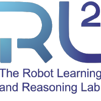

My research focuses on developing generative learning and planning algorithms for generalizable robotic
intelligence. I am particularly interested in three questions: (1) How can robots compose learned
skills to plan beyond their training horizons? (2) How can robots learn and plan across different
levels of abstraction? (3) How can we build programmable and steerable VLA/WAM policies that can be
guided by a high-level reasoning system?
Across these directions, I aim to develop robotic intelligence systems grounded in the principles of
compositionality, modularity, and test-time computation.
Compositional Visual Planning — a training-free sampler that composes pretrained short-horizon video models into globally consistent long-horizon plans.
EgoWAM — world action models that predict the future in abstract visual representations, transferring in-the-wild egocentric human data to robots.
Steering World Action Models — agentic reasoning proposes subgoals that steer a pretrained world action model at inference time. In submission.
Publications
Steering World Action Models in the Wild via Agentic Reasoning
Project lead
In submission to RSS
Introduces a hierarchical control framework that bridges high-level agentic reasoning and low-level
execution, using subgoal proposals to steer pretrained world action models toward generalizable
robotic manipulation.
Introduces a training-free compositional diffusion sampling framework that synthesizes globally
consistent long-horizon visual plans from pretrained short-horizon models through inference-time
message passing.
EgoWAM: World Action Models Beyond Pixels with In-the-Wild Egocentric Human Data
Baoyu Li,
Xinchen Yin,
Mengying Lin,
Yixin Zhang,
Danfei Xu
CoRL, 2026
Distinguished Poster Award, Egocentric Intelligence Research Summit
project
/
arXiv
/
code
Investigates world action models that jointly learn action generation and future prediction in
abstract visual representations, enabling effective human-to-robot transfer from in-the-wild
egocentric data.
Experience
Robotics and State Estimation Lab, University of Washington
Research Assistant, Jul. 2026 – Present
Training agentic VLMs at scale in simulation to enhance spatial reasoning and subgoal generation.
Developing inference-time diffusion guidance mechanisms that enable agentic VLMs to steer world action models.

Robot Learning and Reasoning Lab, Georgia Tech
Research Assistant, Sep. 2024 – May 2026
EgoWAM: leveraging video-action models to improve policy learning through joint training with visual prediction and action generation.
Compositional Visual Planning: introducing an inference-time compositional sampling approach that scales to unseen and long-horizon reasoning tasks.
School of Interactive Computing, Georgia Tech
Teaching Assistant, Aug. 2025 – May 2026
CS 7643: Deep Learning. Instructor: Danfei Xu
CS 8803: Advanced Mobile Robotics. Instructor: Frank Dellaert